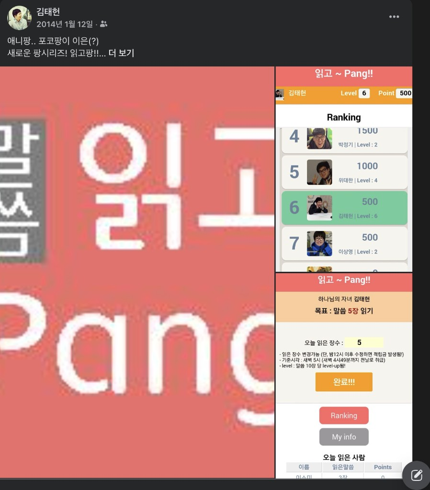

유저플로우 중심 PRD로 계획하고 AI로 완성하기
"코드를 몰라도 된다.
대신, 사용자가 뭘 하는지는 정확히 알아야 한다."
실습 프로젝트: 독서 모임 벌금 관리 서비스 "읽고팡"
사례 1
용돈팡
🔴 문제
아이가 카드에 돈이 얼마 남았는지 몰라서 쓰기가 무서웠다
✅ 해결
로그인 없는 웹앱 개발 → 홈 화면에 추가
사례 2
먹고팡
🔴 문제
회사 사람들이 오늘·내일·이번주 식단 메뉴를 항상 궁금해했다
✅ 해결
바이브 코딩으로 식단 공유 웹앱 개발 → 북마크로 공유
🍽️ 오늘의 메뉴
된장찌개 / 제육볶음 / ...
사례 3 — 오늘 만들 것
읽고팡
🔴 문제
독서 모임을 카톡으로 관리하고, 누군가 벌금을 매주 직접 계산했다
✅ 해결
PHP + MySQL로 직접 개발 → 연 1만원으로 자동 기록 + 자동 정산

바이브 코딩도 결국 문제 해결입니다. 어떤 도구를 쓸지는, 문제를 본 다음에 결정해도 늦지 않습니다.
PART 1
유저플로우 중심 PRD
· 왜 PRD가 필요한가
· 10단계 프레임워크
· AI와 함께 PRD 작성
PART 2
Google Stitch로
화면 먼저 그리기
· 바이브 디자인
· 디자인 → 코드 워크플로우
PART 3
AI에게 전달하고 만들기
· 개발 도구 선택
· 4단계 전달 방식
· 생존 기술 & 에러 대응
| 준비물 | 왜 필요한가 | 설치/가입 |
|---|---|---|
| Google 계정 | AI Studio + Stitch + Firebase 모두 Google 로그인 필요 |
Gmail 있으면 OK ✅ |
| Chrome 브라우저 | 개발자 도구(F12)를 가장 쉽게 쓸 수 있음 | google.com/chrome |
심화 선택
AI 에이전트가 코드 작성·실행·테스트를 자동으로 처리하는 IDE.
Part 3 실전편에서 배포 단계에 이르면 그때 안내합니다.
지금 당장 설치하지 않아도 진행에 문제없습니다.
Part 3 배포 단계에서 필요할 때 안내드립니다
📋 왜 PRD가 필요한가
🔍 바이브 코딩이란
⚖️ 단순 vs 복잡한 서비스
📝 유저플로우 중심 PRD
🏗️ 10단계 프레임워크
🤖 AI에게 PRD 도움받기
AI에게 "독서 모임 앱 만들어줘" → 뭔가 나온다.
하지만 복잡한 서비스를 이렇게 만들면 반드시...
| 문제 | 실제로 일어나는 일 |
|---|---|
| AI가 임의로 구조를 결정 | 로그인 없이 만들거나, DB 구조가 엉뚱하게 나옴 |
| 중간에 방향 수정 불가 | "벌금 기능 추가해줘" → 기존 코드와 충돌 → 처음부터 다시 |
| 예외 처리 누락 | 숫자 대신 문자 입력하면 앱이 멈춤 |
| 사용자 상태 미고려 | 모임이 끝났는데도 제출 버튼이 살아있음 |
| 디자인이 엉망 | AI 기본 UI는 밋밋하고, 수정 요청하면 더 이상해짐 |
단순한 건 그냥 요청해도 된다.
복잡한 서비스는 계획 없이 시작하면 100% 실패한다.
AI는 훌륭한 개발자지만, 기획자도 디자이너도 아니다.
코드 쓰기 전에 명확한 스펙(계획)을 먼저 작성하고, AI가 그 스펙을 바탕으로 코드를 생성
→ PRD 작성이 바로 SDD
"AI에게 어떤 정보를 얼마나 잘 전달하느냐"
Shopify CEO 토비 뤼트케 + 안드레이 카르파티 제안
→ PRD + 디자인 + Phase별 전달 전부가 이것
SDD
무엇을 만들지 계획 (PRD)
Context Eng.
그 계획을 잘 전달 (Phase별 대화)
서비스 완성 🚀
| 도구 | 단계 | 특징 | 난이도 |
|---|---|---|---|
| Google Stitch ⭐ | 디자인 | 말로 설명 → AI가 UI 디자인 생성 | 매우 쉬움 |
| Google AI Studio ⭐ | 개발 | 대화형 + Build Mode (브라우저에서 앱 생성/배포) | 쉬움 |
| Lovable | 디자인+개발 | 프롬프트 → 폴리시된 React 앱 즉시 생성 | 쉬움 |
| Bolt.new | 개발 | 브라우저에서 웹앱 즉시 생성/배포 | 쉬움 |
| Google Antigravity | 개발 | AI 에이전트 기반 IDE, 코드 작성·실행·테스트 자동 | 보통 |
| Cursor | 개발 | VS Code 기반 AI 에디터, 100만 사용자 | 보통 |
| Claude Code | 개발 | 터미널 기반, 코드 품질 최고 | 높음 |
여기서는 Stitch(디자인) + AI Studio(개발)를 기준으로 합니다.
이유: 둘 다 Google 제품 → 이미지 전달로 연결, 무료, 비개발자에게 가장 접근성 높음
"AI야 앱 만들어줘"
"이 PRD와 이 디자인대로
Step 1부터 만들어줘"
공통점: 사용자 1명, 상태 변화 거의 없음, 데이터 저장 불필요
공통점: 여러 사용자, 역할이 다름, 상태 변화 많음
□ 로그인이 필요하다
□ 사용자 역할이 2개 이상이다
□ 화면이 3개 이상이다
□ 데이터를 저장하고 불러와야 한다
□ 사용자의 상태가 변한다
□ 시간에 따라 달라지는 규칙이 있다
"읽고팡"은 6개 전부 해당 → PRD 필수
| 접근법 | 중심 질문 | 비전공자 난이도 |
|---|---|---|
| 기능 중심 | "어떤 기능이 필요한가?" | 보통 |
| 기술 중심 | "어떤 API, DB가 필요한가?" | 높음 |
| 유저플로우 중심 ✅ | "사용자가 무엇을 하는가?" | 낮음 — 내가 사용자가 되어 상상 |
"내가 이 앱을 처음 열었다. 그다음 뭘 하지?"
이 질문을 반복하면 된다. 기술 용어는 하나도 몰라도 된다.
"로그인 기능, 모임 생성 기능,
장 수 입력 기능, 벌금 계산 기능 만들어줘"
→ 로그인 후 빈 화면. 기록이 모임과 연결 안 됨.
Step 1: 이메일 입력 → 회원가입/로그인 → 홈
Step 2: 모임 만들기 → 6자리 코드 생성 → 카톡 공유
Step 3: 코드 입력 → 최소 장수 설정 → 모임 참여
Step 4: 장 수 입력 → 제출 → 벌금 여부 즉시 표시
→ AI가 각 단계를 순서대로 구현할 수 있다 ✅
방향 설정
왜 만드는가
누구를 위한가
가장 중요한 것
PRD의 본체
페이지 설계
조건부 화면
에러 대비
DB 설계
기술 선택
💡 1~5단계는 내가 초안을 쓴다. 작성 후 AI에게 검토·보완을 받고, 6~10단계는 AI 초안으로 시작하자.
[누가] + [무엇을 해서] + [어떤 결과를 얻는] 서비스
3가지 문장, 사용자가 겪는 고통
→ 홈 화면이 결정됨: 숫자 입력 필드 + 제출 버튼
각 Step을 사용자 행동 / 시스템 반응 / 저장 정보 3가지로 쓴다
사용자 행동
이메일/비밀번호 입력 → 로그인 버튼
시스템 반응
홈 화면으로 이동
저장 정보
이메일, 가입 시각, 마지막 접속
사용자 행동
기간/벌금/최소 장수/도서명/인원 입력
시스템 반응
모임 생성 + 6자리 코드 자동 생성
저장 정보
모임 설정값, 생성자, 생성 시각
사용자 행동
숫자 입력 → 제출 버튼
시스템 반응
덮어쓰기 / 미달 시 벌금 표시 / 그래프 업데이트
저장 정보
날짜별 장 수, 수정 시각, 벌금 여부, 누적 벌금
| 화면 | 목적 | 대상 |
|---|---|---|
| 로그인 | 이메일 로그인 | 전체 |
| 홈 | 장 수 입력 + 확인 | 참여자 |
| 모임 만들기 | 규칙 설정 후 생성 | 생성자 |
| 모임 참여 | 코드 입력 + 설정 | 참여자 |
| 진행 현황 | 누적/벌금/시각화 | 참여자 |
화면 수는 5개 이하, 1화면 1목적
⚠️ 이걸 안 쓰면: 모임이 끝났는데 제출 버튼이 살아있는 문제
| 숫자 외 입력 | "숫자만 입력해주세요" |
| 음수 또는 0 | "1 이상 숫자를 입력해주세요" |
| 기간 종료 후 제출 | "모임 기간이 종료되었습니다" |
| 인원 초과 | "모집이 마감되었습니다" |
사용자
이메일, 가입 시각, 마지막 접속
모임
기간, 벌금, 최소 장수, 도서명, 인원 제한, 생성자, 상태
기록
날짜, 장 수, 수정 시각
정산
벌금 여부, 누적 벌금
| 방식 | 설명 | 용도 |
|---|---|---|
| Firebase ⭐ | Google 클라우드 DB. 로그인 내장 |
로그인 + 여러 사용자 + 실시간 |
| Supabase | 오픈소스 SQL DB | 데이터 관계 복잡 + 비용 중요 |
| 로컬 저장소 | 내 브라우저에만 저장 | 1인용 도구 |
왜 Firebase인가?
| 단계 | 내용 | 전략 |
|---|---|---|
| 1~5단계 ⭐ | 서비스 정의 / 문제 / 사용자 / 핵심 행동 / 유저플로우 | 내가 초안 → AI에게 검토·보완 |
| 6~10단계 | 화면 / 상태 / 예외 / 저장 / 기술 스택 | AI 초안 → 내가 수정 |
AI에게 보내는 프롬프트 (그대로 붙여넣기)
나: 1~5단계 초안
유저플로우까지 내가 먼저
AI: 검토 + 6~10단계
누락 보완 + 기술 사항 초안
나: 최종 검토 → 완성
내 서비스니까 내가 마무리
💡 이 PRD 전체를 그대로 AI에게 전달하면 된다.
PRD가 "무엇을 만들 것인가"를 정한다면,
디자인은 "어떻게 보일 것인가"를 정한다.
AI에게 코드를 요청하기 전에 화면을 먼저 그려두면 결과물이 10배 좋아진다.
🎨
바이브 디자인
🔗
Google Stitch
⚡
이미지 전달
✅ 텍스트로 설명 → 고퀄리티 UI 생성
✅ 스케치/참고 이미지 업로드 가능
✅ 무료 (Google 계정만 있으면 됨)
✅ AI Studio로 이미지 전달 가능!
stitch.withgoogle.com → Google 로그인
| 모드 | AI 모델 | 월 사용량 |
|---|---|---|
| Standard | Gemini Flash | 350회/월 |
| Experimental | Gemini Pro | 50회/월 |
모바일 or 웹 → "읽고팡"은 Mobile 선택
"전체 바꿔줘"보다 "이 부분만 바꿔줘"가 훨씬 낫다
✅ 좋은 프롬프트
앱 맥락 먼저, 위→아래 구체적 설명, 색상 코드 지정
❌ 나쁜 프롬프트
"로그인 화면 만들어줘" "예쁘게 해줘" (너무 모호)
🔐 로그인 화면
🏠 홈 화면 (미제출)
✅ 홈 화면 (제출 완료)
📊 진행 현황
🎨
Stitch
디자인 완성
→
이미지 전달
🤖
AI Studio
코드 생성
→
자동 생성
🚀
동작하는 앱!
디자인 없이
밋밋한 기본 UI / "좀 더 예쁘게" 반복 / 화면마다 스타일 달라짐 / 시간 낭비
Stitch 디자인 후
프로 수준 디자인 / 수정 거의 불필요 / 전체 통일 / Stitch → 이미지 전달
🛠️ 개발 도구 선택 (2026)
📤 AI에게 PRD를 전달하는 4단계
💬 실전 대화록
🔑 비개발자의 생존 기술
⚠️ 자주 하는 실수 & 해결법
🗺️ 서비스 개발 로드맵
| 도구 | 특징 | 비용 | 추천도 |
|---|---|---|---|
| Stitch + AI Studio ⭐ | 디자인→이미지 전달→코드, Build Mode 배포 | 무료 | ⭐⭐⭐⭐⭐ |
| Google Antigravity | 에이전트 기반 IDE, Firebase 생태계 친화적 | 무료 시작 | ⭐⭐⭐⭐ |
| Cursor | VS Code 기반 AI IDE, 100만+ 사용자 | $20/월 | ⭐⭐⭐⭐ |
| Lovable | 프롬프트 → 폴리시된 React 앱 즉시 | 무료 시작 | ⭐⭐ |
| Bolt.new | 브라우저에서 앱 생성, 빠른 프로토타입 | 무료 시작 | ⭐⭐ |
| Replit | Agent 3: 자율 개발, 모바일 앱 지원 | 무료 시작 | ⭐⭐ |
기존 방식
AI Studio → 코드 복사 → 에디터에서 파일 생성 → npm start → 배포
Build Mode ✨
프롬프트 입력 → 브라우저에서 자동 생성 → 미리보기 → 원클릭 배포
PRD + 디자인 + "전부 만들어줘"
→ 중간에 꼬이면 전부 다시
Phase별 전달 → 확인 → 다음
→ 문제 시 그 단계만 수정
프로젝트 세팅 + 데이터 구조
아직 화면은 만들지 않는다
유저플로우 Step별 화면 구현
매 Step마다 테스트 체크리스트
예외 처리
PRD 8번 예외 상황 전달
상태별 화면 분기
PRD 7번 상태 변화 전달
💡 질문이 나오면 PRD가 잘 된 것이다.
질문 없이 바로 코드 → 위험!
에러 보는 곳:
• 앱 안 켜질 때 → 터미널
• 화면 이상 → F12 → Console
문제 보고
[뭘 했는데] + [뭐가 일어났고] + [원래 기대한 것]
기능 수정
[현재 동작] + [원하는 동작] + [PRD 몇 번 참고]
모르는 것
[하려는 것] + [막힌 지점] + "나는 비개발자야"
Stitch를 썼다면 이 문제가 거의 없다!
| 실수 | 결과 | 해결 |
|---|---|---|
| PRD 없이 "만들어줘" | AI가 엉뚱한 앱을 만듦 | 한 줄 정의만이라도 정확히 |
| 한 번에 전부 요청 | 꼬이면 전부 다시 | Phase별, Step별로 나눠서 |
| 디자인 없이 시작 | 수정에 시간 낭비 | Stitch에서 먼저 디자인 |
| 예외 처리 나중에 | 기존 코드와 충돌 | Phase 3에서 한번에 |
| 상태 미고려 | 기간 종료 후에도 제출 가능 | Phase 4에서 반드시 처리 |
| 에러를 자기 말로 설명 | AI가 엉뚱한 걸 고침 | 에러 메시지 그대로 복사 |
| 저장 정보 누락 | 벌금 데이터 없음 | PRD 9번 꼼꼼히 작성 |
| AI 코드 맹신 | 실수를 못 발견 | 매 Step 테스트 체크리스트 |
| 단계 | 할 일 | 도구 |
|---|---|---|
| PART 1: 계획 | ||
| 1~4 | 서비스 정의, 문제, 사용자, 핵심 행동 직접 작성 | 직접 작성 |
| 5~10 | AI에게 초안 요청 → 검토/수정 | AI Studio |
| PART 2: 디자인 | ||
| 화면 디자인 | 5개 화면 AI로 디자인 (Zoom-Out-Zoom-In) | Google Stitch |
| 디자인 전송 | AI Studio로 이미지 전달 | Stitch → AI Studio |
| PART 3: 개발 | ||
| Phase 1 | 프로젝트 세팅 + DB 구조 확인 | AI Studio |
| Phase 2 | Step별 화면 구현 (테스트 체크리스트) | AI Studio |
| Phase 3 | 예외 처리 (PRD 8번) | AI Studio |
| Phase 4 | 상태별 화면 분기 (PRD 7번) | AI Studio |
| 배포 | Antigravity 확인 → Vercel 배포 → URL 공유 | Antigravity + Vercel |
프롬프트 예시 참고해서 로그인 / 홈 / 모임 만들기 / 참여 / 진행 현황 디자인
이미지 전달 후 PRD 붙여넣고 AI에게 질문 받아보기
복잡도 체크리스트 확인 → 10단계 프레임워크 적용 → Stitch 디자인 → 개발
Google Stitch
stitch.withgoogle.com
Google AI Studio
aistudio.google.com
Google Antigravity
antigravityide.org
📋
PRD는 80%면 충분.
나머지는 만들면서 채운다.
🎨
디자인도 70%면 AI가
코드로 잘 만든다.
💪
에러는 실패가 아니다.
처음부터 다시도 정상이다.
비전공자를 위한 바이브 코딩
APPENDIX
Firebase 보안 규칙 1/2 — 테스트 모드에서 벗어나기
Firebase 보안 규칙 2/2 — 복사해서 붙여넣기
AI Studio 결과물 → Vercel 배포
필요할 때 꺼내 보세요
⚠️ Firebase가 자동 생성한 테스트 모드 규칙 — 교체해야 할 대상
→ 로그인 없이도 누구나 접근 가능
→ 내 앱을 한 번도 쓴 적 없는 사람도 데이터 읽기·수정·삭제 가능
→ 이대로 배포하면 큰일납니다. 반드시 다음 슬라이드 규칙으로 교체!
Phase 1~2 (개발 중)
테스트 모드 OKPhase 3~4 (기능 완성)
보안 규칙 적용배포 전
반드시 완성console.firebase.google.com 접속
내 프로젝트(readgopang) 선택
왼쪽 메뉴 → Firestore Database
빌드 → Firestore Database 클릭
상단 탭 → "규칙(Rules)" 클릭
데이터 / 규칙 / 색인 / 사용량 중 "규칙" 선택
기존 내용 전체 선택(Ctrl+A) 후 삭제
다음 슬라이드의 규칙 코드를 붙여넣기
우측 상단 "게시(Publish)" 버튼 클릭
바로 적용됨 — 새로고침 불필요
→ 로그인한 사람만 읽을 수 있다
→ 본인 데이터만 쓸 수 있다
→ 아무도 삭제할 수 없다
⚠️ 규칙 적용 후 앱 기능이 안 되면?
Chrome → F12 → Console 탭에서 에러 복사
→ AI에게 붙여넣기 → 바로 해결
Q. 로그인 없이 누구나 쓸 수 있는 서비스라면?
⚠️ 일부만 붙여넣으면 오류! 아래 코드 전체를 선택 후 교체해야 합니다
① 읽기 + 등록만 허용
예: 익명 설문, 방명록
✅ 남이 내 글을 못 지움
② 수정·삭제도 허용
예: 공개 메모장
⚠️ 누구나 남의 데이터도 삭제 가능
③ 비밀 토큰으로 본인 확인
예: 링크 공유 수정폼
✅ 토큰 아는 사람만 수정
💡 수정·삭제가 필요하면 AI에게 이렇게 요청: "로그인 없이 누구나 읽고 쓸 수 있는 서비스야. 단, 문서를 만든 사람만 수정·삭제할 수 있게 토큰 방식으로 보안 규칙 만들어줘."
AI Studio → 프로젝트 다운로드 (ZIP)
Antigravity로 열기 → 에이전트가 npm install + 실행 확인
.env 파일에 API 키 입력 (Firebase, Gemini 등)
Vercel CLI로 배포
Vercel 대시보드에 환경변수 등록 → 완료!
⚠️ API 키를 프롬프트에 직접 쓰지 마세요
대화 기록에 남아 노출될 수 있습니다